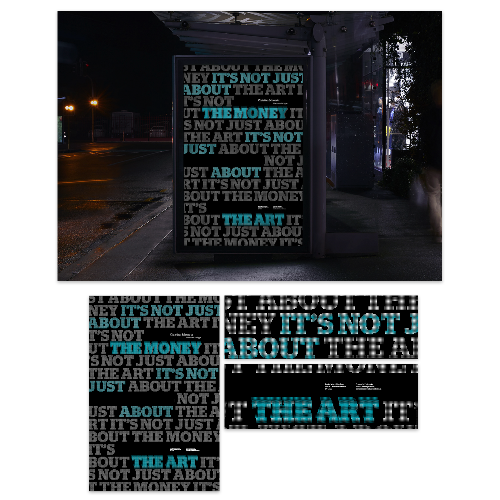

2016, digital, print (InDesign)
The mandate was to design a poster for a typography talk by Christian Schwartz at the Department of Design and Computation Arts, Concordia University in March, 2016. The 24 in x 36 in poster needed to use Commercial Type foundry fonts and only two printing colours. The colour choice and layout were inspired by the Commercial Type website, which uses blue and black as its primary colours and the different typefaces are presented in a condensed, in-your-face manner. The title of the talk “It’s not just about the money, It’s not just about the art” is the enhanced by the use of repetition and the type choice creates a texture that is visible even at a distance.